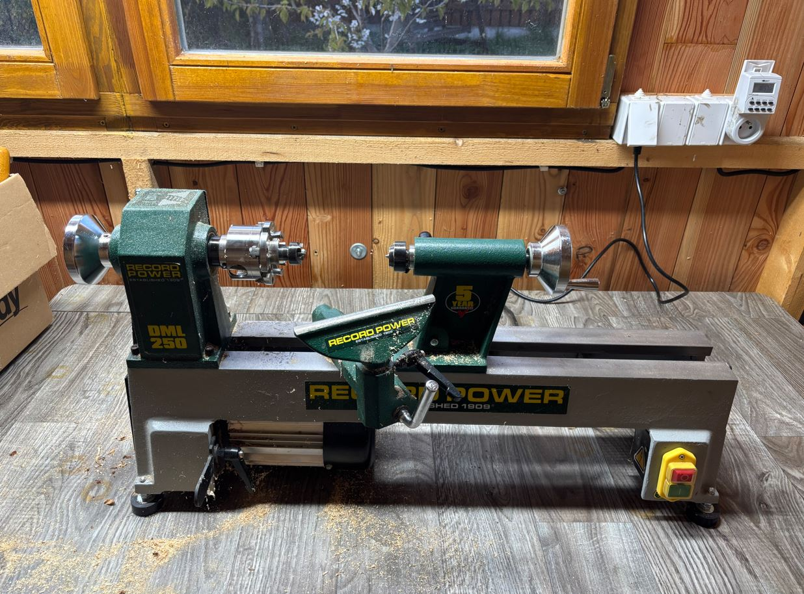
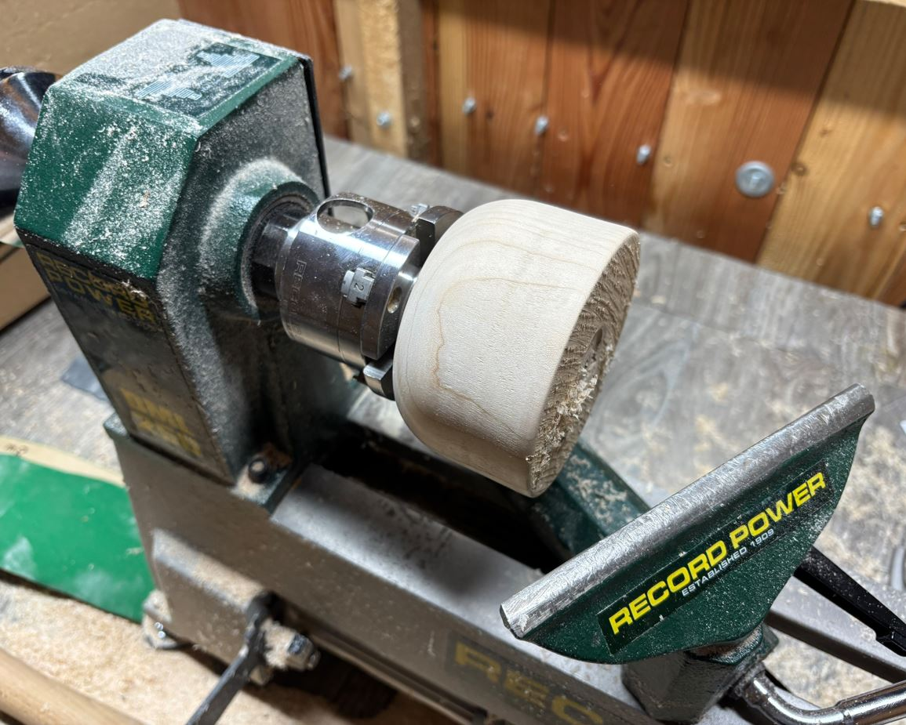
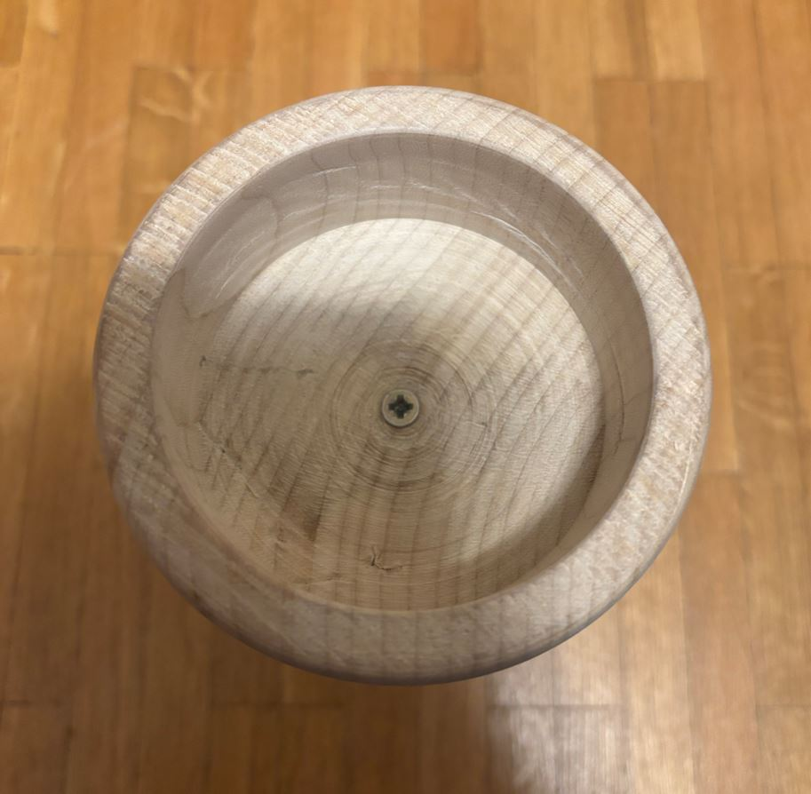
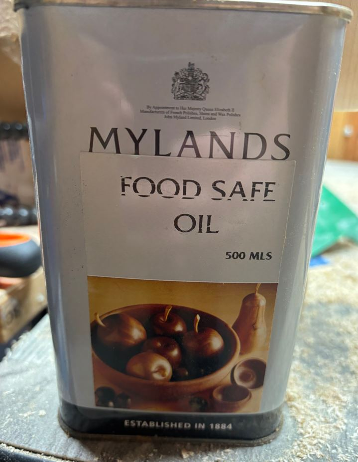

10. týden: Wildcard Week 10: Wildcard
Během desátého týdne bylo úkolem vyzkoušet si stroj nebo techniku, se kterou jsme dosud nepracovali. During the tenth week, the task was to try out a machine or technique that we had not worked with before.
Soustružení dřevěné číše Woodturning a wooden chalice
Můj bratr se dříve chtěl stát truhlářem. Přestože se dnes věnuje jiné profesi, zůstal nám doma soustruh, různé truhlářské nářadí a kupa dřeva. Rozhodl jsem se toho využít a vyrobit dřevěnou číši. My brother used to want to become a carpenter. Although he works in a different profession today, we still have a lathe, various carpentry tools, and a pile of wood at home. I decided to take advantage of this and make a wooden chalice.
Číši jsem rozdělil do dvou částí - vrchní kalich s dutinou a spodní stojan. Rozhodl jsem se je vyrobit zvlášť z odlišných druhů dřeva a následně je spojit pomocí lepidla a vrutu. I divided the chalice into two parts - the upper goblet with a cavity and the lower stand. I decided to make them separately from different types of wood and then join them using glue and a screw.
Příprava materiálu a uchycení Material preparation and mounting
Začal jsem výběrem dřeva pro vrchní část. Zvolil jsem velký světlý blok, pravděpodobně se jedná o smrk nebo borovici. I started by selecting wood for the upper part. I chose a large light-colored block, probably spruce or pine.

Dřevo jsem uchytil do svěráku a pilkou odřízl válec o průměru 12 cm a výšce 8 cm. Abych mohl polotovar upnout k hřídeli soustruhu, předvrtal jsem si 3 mm otvory a válec jsem přišrouboval k lícní desce. Používám vrtačku Makita HP2050. I clamped the wood in a vise and used a saw to cut off a cylinder with a diameter of 12 cm and a height of 8 cm. To be able to clamp the blank to the lathe spindle, I pre-drilled 3 mm holes and screwed the cylinder to the faceplate. I am using a Makita HP2050 drill.


Bezpečnost při práci Workplace safety
Aby nehrozilo zachycení oděvu rotujícími částmi soustruhu, měl jsem krátký rukáv a přiléhavé oblečení. Po celou dobu jsem měl nasazené ochranné plastové brýle. Během broušení jsem navíc používal respirátor, abych vdechoval co nejméně jemného prachu. To prevent the risk of clothing being caught by rotating parts of the lathe, I wore short sleeves and tight-fitting clothes. I wore protective plastic glasses the entire time. During sanding, I also used a respirator to inhale as little fine dust as possible.
Obrábění na soustruhu Machining on the lathe
Pro samotnou výrobu jsem použil soustruh Record Power DML250. K dispozici jsem měl následující struhy: For the actual production, I used a Record Power DML250 lathe. I had the following turning tools at my disposal:
- Kosý škrabák: vytváření rovných ploch a ostrých rohů. Skew scraper: creating flat surfaces and sharp corners.
- Oblý škrabák: zaoblené plochy a vytváření dutin. Round nose scraper: curved surfaces and creating cavities.
- Hrotový škrabák: dekorativní drážky. Point scraper: decorative grooves.
Protože jsou všechny tyto nástroje určené spíše k dokončování a vyhlazování, byla fáze hrubování (odebírání většího množství materiálu) velmi zdlouhavá. Because all these tools are primarily intended for finishing and smoothing, the roughing phase (removing a larger amount of material) was very time-consuming.



Prvním krokem bylo přeměnit hrubý blok na dokonalý válec. Postupně jsem z vnějšku ubíral materiál tak dlouho, dokud nezmizely všechny zářezy a škrábance a povrch nezůstal rovný a hladký. The first step was to turn the rough block into a perfect cylinder. I gradually removed material from the outside until all cuts and scratches disappeared and the surface remained flat and smooth.

Následně jsem přešel k tvarování vnější části číše. Pomocí oblého škrabáku jsem vytvořil zaoblený spodek kalichu. Next, I moved on to shaping the outside of the chalice. Using the round nose scraper, I created the rounded bottom of the goblet.
V místě, kde bylo dřevo dočasně přišroubované k lícní desce, bude později vyhloubena hlavní dutina. Abych mohl číši zevnitř vyhloubit, musel jsem ji tedy později uchytit z opačné strany. Vytvořil jsem proto na zaobleném spodku tzv. upínací vybrání pro čelisťové sklíčidlo. In the place where the wood was temporarily screwed to the faceplate, the main cavity will be hollowed out later. In order to hollow out the chalice from the inside, I had to mount it from the opposite side later. Therefore, I created a so-called chuck recess for the scroll chuck on the rounded bottom.
Ještě před vyjmutím ze soustruhu jsem celý vnější povrch důkladně obrousil (použil jsem brusný papír se zrnitostí postupně od P150 až po P600). Even before removing it from the lathe, I thoroughly sanded the entire outer surface (I used sandpaper with grit sizes progressively from P150 to P600).



Hloubení dutiny kalichu se ukázalo jako nejnáročnější část projektu. Běžně se k tomuto účelu používá speciální struh na misky, ten jsem ale bohužel neměl, takže proces trval velmi dlouho. Většinu vnitřního materiálu jsem postupně odebíral pomocí oblého škrabáku. Na následné zarovnání vnitřních stěn posloužil kosý škrabák. Hollowing out the goblet cavity proved to be the most demanding part of the project. A special bowl gouge is usually used for this purpose, but unfortunately I didn't have one, so the process took a very long time. I gradually removed most of the inner material using a round nose scraper. A skew scraper was used to subsequently level the inner walls.
Kvůli chybějícímu vybavení se mi nepodařilo dno dutiny dokonale vyhladit - chyběl mi nástroj, který by do tohoto místa dosáhl pod správným úhlem. Due to the lack of equipment, I could not smooth the bottom of the cavity perfectly - I lacked a tool that would reach this spot at the correct angle.
Během obrábění jsem tloušťku stěn a hloubku dutiny kontroloval pouze dotykem a vlastním pocitem. Skrz jsem se naštěstí neprovrtal a tloušťka stěn se zdá být rovnoměrná. During machining, I checked the wall thickness and cavity depth only by touch and my own feeling. Fortunately, I didn't drill through and the wall thickness seems to be even.
Pro stojan číše jsem vybral pro hezký vizuální kontrast tmavší dřevo z ovocného stromu, pravděpodobně třešně. Postup jeho soustružení byl totožný jako u vrchní části. Na jeho povrchu jsem hrotovým škrabákem vytvořil malé dekorativní drážky. For the chalice stand, I chose darker wood from a fruit tree, probably cherry, for a nice visual contrast. The turning process for it was identical to the top part. I created small decorative grooves on its surface with a point scraper.

Kompletace a povrchová úprava Assembly and finishing
Hotové části jsem spojil lepidlem na dřevo, předvrtal 3 mm vrtákem a následně sešrouboval. Bohužel se mi vrut nepodařilo dokonale vycentrovat, takže je číše lehce nakřivo. Zároveň mi při montáži sklouzl vrták a poškodil povrch uvnitř dutiny. I joined the finished parts with wood glue, pre-drilled with a 3 mm drill bit, and then screwed them together. Unfortunately, I did not manage to center the screw perfectly, so the chalice is slightly crooked. At the same time, the drill bit slipped during assembly and damaged the surface inside the cavity.


Aby bylo dřevo odolnější a vynikly jeho přirozené barvy a vzory, ošetřil jsem celou číši food-safe olejem, který je bezpečný pro styk s potravinami. To make the wood more durable and bring out its natural colors and patterns, I treated the entire chalice with food-safe oil, which is safe for food contact.
Nejprve jsem nanesl štědrou vrstvu oleje a rozetřel ji hadříkem. Zhruba po půlhodině jsem nevstřebaný zbytek setřel a nechal povrch 12 hodin schnout. Poté jsem stejným postupem aplikoval ještě druhou vrstvu. First, I applied a generous layer of oil and spread it with a cloth. After about half an hour, I wiped off the unabsorbed excess and let the surface dry for 12 hours. Then I applied a second layer using the same procedure.

Výsledek mé práce na soustruhu: The result of my work on the lathe: